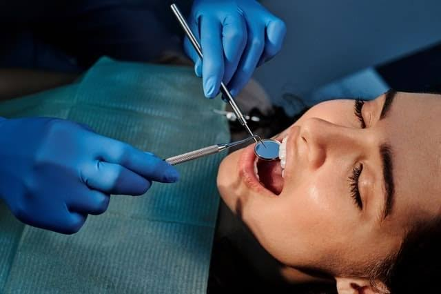

Atención con
calidad y calidez
Clínica líder en la región especializada en el cuidado y conservación de tu salud bucal. Contamos con excelentes profesionales y equipamiento de punta.


Clínica Líder
Equipamiento de punta
Dr. Arnaldo Alvarez M.
Dirigiendo la Clínica Dental San Marcos, mi compromiso es devolver la salud, función y estética a tu sonrisa con los más altos estándares profesionales.
Nuestra clínica se ha posicionado como líder en la región de Chancay y Huaral gracias a que combinamos experiencia médica comprobada con un trato humano excepcional. Cada paciente recibe un diagnóstico preciso y un tratamiento totalmente personalizado.
¡Cuidamos tu salud bucal! 🦷
- Profesionales de excelencia
- Materiales y equipos de punta
Soluciones Dentales
Cubrimos tus necesidades bucales con precisión y cuidado.
Limpieza Dental
Profilaxis profunda para eliminar sarro, placa bacteriana y prevenir futuras enfermedades periodontales.
Ortodoncia
Alineación de tus dientes y corrección de la mordida utilizando brackets de alta calidad para resultados duraderos.
Blanqueamiento
Aclaramiento clínico seguro para eliminar manchas y devolverle el brillo y color natural a tu sonrisa.
Endodoncia
Tratamiento de conducto altamente especializado para curar infecciones profundas y salvar tu diente del dolor.
Transformaciones que inspiran
Conoce el impacto de nuestros tratamientos estéticos en nuestros pacientes de Chancay.

DespuésBlanqueamiento Clínico
Aclaramiento dental seguro y sin sensibilidad.
 Antes
Antes
 Después
Después
Ortodoncia
Alineación perfecta mejorando la estética y mordida.
Lo que dicen de nosotros
"Llegué por un dolor insoportable y el Dr. Alvarez me hizo una endodoncia rápida y sin dolor. La clínica es muy moderna y limpia. Recomendados 100% en Chancay."
- Roberto G.
"Llevo mi tratamiento de ortodoncia aquí y la diferencia es increíble. La atención es de primera, te explican todo con mucha paciencia."
- Luciana P.
"Me hice un blanqueamiento y quedé feliz. Se nota que usan materiales de buena calidad porque no tuve nada de sensibilidad después."
- Camila T.
Preguntas Frecuentes
Para mantener una salud bucal óptima y prevenir la formación de sarro profundo, recomendamos realizarse una limpieza dental profesional (profilaxis) cada 6 meses.
No, cuando es realizado por profesionales como los de la Clínica San Marcos, utilizamos productos regulados y seguros que aclaran el diente sin desgastar ni dañar el esmalte natural.
Visítanos en Chancay
Clínica Dental San Marcos
Dirección
Av. Lopez de Zuñiga 305 (Boulevard)
Chancay - Huaral, Perú
Correo Electrónico
clinicadentalsanmarcos@hotmail.com
Citas / WhatsApp
975 561 588